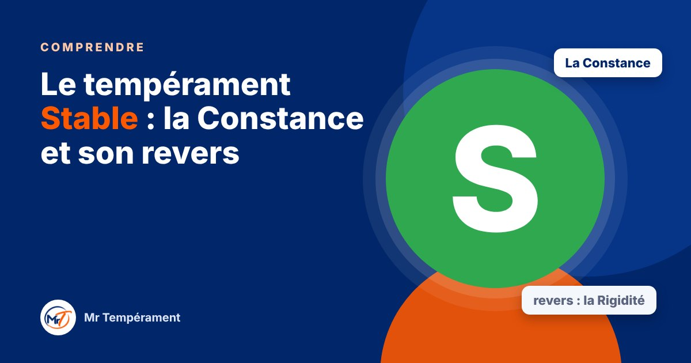

Le tempérament Stable : la Constance et son revers

Il est fidèle, patient, présent. Voici comment il fonctionne, et ce qu'il gagne à oser davantage.
Dans le modèle DISC, le « S » désigne le tempérament Stable. C'est peut-être le vôtre, ou celui d'un proche sur qui vous vous appuyez depuis des années. Voici ce qui le caractérise. Comme pour les autres, rappelons que nous avons un peu des quatre, et que celui-ci s'exprime simplement davantage chez certains.
Comment fonctionne le Stable
Le Stable cherche la sécurité, l'harmonie et la durée. Il aime les routines rassurantes, les relations de confiance et les environnements calmes. Il écoute, il prend le temps, et il tient ses engagements. Il supporte mal les changements brusques, les conflits ouverts et la pression pour décider vite.
Sous pression, il se ferme. Il encaisse sans rien dire, parfois longtemps, jusqu'à ce que la limite soit atteinte.
Son super-pouvoir : la Constance
La Constance du Stable, c'est de ne pas lâcher. Il est fidèle dans l'amitié, loyal dans le travail, patient dans l'épreuve. Les personnes autour de lui savent qu'elles peuvent compter sur lui, aujourd'hui comme dans dix ans.
Une famille ou une équipe sans Stable manque de racines. Il est celui qui rassure, qui apaise les tensions et qui fait durer ce qui a de la valeur.
Son revers : la Rigidité
Poussée trop loin, la Constance devient de la Rigidité. Le Stable résiste au changement, même quand il serait utile, garde pour lui ce qui le blesse, a du mal à dire non, et laisse s'installer un ressentiment silencieux.
Les autres ne devinent pas toujours ce qu'il pense. Ils croient qu'il est d'accord alors qu'il ne l'est pas. Le décalage finit par fatiguer tout le monde.
Au quotidien : couple, travail, argent
En couple, le Stable offre un lien solide et calme, mais il peut taire ses besoins. Au travail, il est fiable et régulier, mais il gagne à prendre la parole plus tôt et à dire non quand la charge est trop forte. Avec l'argent, il épargne volontiers et préfère la sécurité, parfois jusqu'à éviter tout risque.
Là encore, ce sont des tendances. Quelques habitudes simples suffisent à les assouplir.
Trois gestes pour cultiver sa Constance avec souplesse
Le premier : nommer une gêne le jour même, en une phrase simple. Le deuxième : exprimer une préférence dans chaque décision de groupe. Le troisième : dire non à une demande par semaine, calmement.
Si vous vivez avec un Stable, laissez-lui du temps, annoncez les changements à l'avance, et posez-lui des questions précises : il répondra volontiers, mais il ne prend pas toujours l'initiative de parler.
Une carte, jamais une cage
Être Stable ne condamne pas à subir. Beaucoup de Stables découvrent qu'ils peuvent dire ce qu'ils pensent sans rompre l'harmonie, et que cela renforce même leurs relations.
Pour aller plus loin
Vous vous reconnaissez ? Le test gratuit vous donne votre tempérament dominant en une minute, sans inscription.
Découvrir mon tempérament